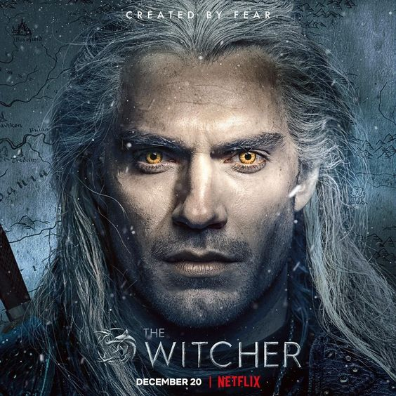

The Witcher
Akcja serialu
Amerykańsko-polski telewizyjny serial fantasy, stworzony przez Lauren S. Hissrich na podstawie opowiadań Andrzeja Sapkowskiego o wiedźminie Geralcie. Scenariusze odcinków napisali Declan de Barra, Jenny Klein i Michael Ostrowski, a reżyserami są Alik Sacharow, Charlotte Brändström i Alex Garcia Lopez. Producentami wykonawczymi są m.in. Tomasz Bagiński, Alik Sacharow i Sean Daniel.
Akcja serialu, osadzonego w inspirowanej średniowieczem krainie, przedstawia losy Geralta z Rivii (Henry Cavill) – najemnego łowcy potworów, który znajduje swoje przeznaczenie w młodej księżniczce Cirilli (Freya Allan) i czarodziejce Yennefer (Anya Chalotra). Pierwsza seria zrealizowana została na podstawie wybranych opowiadań ze zbiorów Miecz przeznaczenia i Ostatnie życzenie, które poprzedzają tzw. sagę o wiedźminie i zostały wykorzystane do zarysowania poszczególnych postaci, zanim po raz pierwszy spotkają się ze sobą.
Na ten moment stworzony został dopiero ośmioodcinkowy sezon, bazujący na zdarzeniach ze zbioru opowiadań Sapkowskiego Ostatnie Życzenie, oraz książki Krew elfów
Recenzja
8/10Serial Wiedźmin to porządna adaptacja opowiadań - i pamięć o tym, że chodzi właśnie o opowiadania, a nie powieści, jest w tym przypadku kluczowe. Nie otrzymujemy bowiem jednej, spójnej historii, ale udaną antologię, której celem jest przede wszystkim wprowadzenie nas do wiedźmińskiego świata i przedstawienie bohaterów.
Niezaznajomieni z prozą Sapkowskiego mogą mieć momentami problemy z chronologią, która jest nieco „przeplatana”. Nie zmienia to jednak faktu, że podstawy fabularne są proste - z jednej strony mamy ucieczkę Ciri przed agentami Nilfgaardu, a z drugiej perypetie Geralta, który w końcu musi spotkać na swojej ścieżce Dziecko Niespodziankę, czyli właśnie Cirillę.
Twórcom serialu udało się stosunkowo wiernie przedstawić część wydarzeń, a niektóre zmieniono czy nawet osadzono inaczej w czasie. Nie przeszkadza to w odbiorze, a nawet sprawia, że nie wiemy, czego się spodziewać, aczkolwiek momentami można odnieść wrażenie, że idące za opowiadaniami Sapkowskiego przesłania skrócono lub spłycono. Tutaj nie słyszymy przecież przemyśleń wiedźmina.
Henry Cavill wypada świetnie jako Geralt, choć czasem można odnieść wrażenie, że trochę na siłę obniża ton głosu. Mimo to, wszelkie pomruki i lakoniczne wypowiedzi idealnie oddają charakter wiedźmina, podobnie zresztą jak okazjonalne interakcje czy nawet „rozmowy” z Płotką. Doskonały jest też Jaskier, choć pod koniec sezonu - przez jego długą nieobecność - można zapomnieć, że w ogóle występował w tej serii.
Dokładne nakreślenie przeszłości Yennefer i pokazanie nauki w szkole czarodziejek to dobra decyzja, która pozwala lepiej zrozumieć charakter bohaterki. Anya Chalotra bez zarzutu poradziła sobie z rolą kobiety po przejściach, która cały czas nie może sobie poradzić ze swoją przeszłością, cały czas szuka celu, ale jest też zdeterminowana i nieugięta, kiedy stawia przed sobą jakieś zadanie.
Wiedźmina na pewno warto obejrzeć, choć odradzałbym tak zwany „binge-watching”. Z racji struktury wiernej opowiadaniom, lepiej chyba odczekać nieco po każdym epizodzie - by podświadomie nie oczekiwać w kolejnym bezpośredniej, płynnej i tradycyjnej kontynuacji wszystkich wątków. Otrzymujemy porządny wstęp do wiedźmińskiego świata, który rozbudza apetyt na adaptację powieściowej sagi.